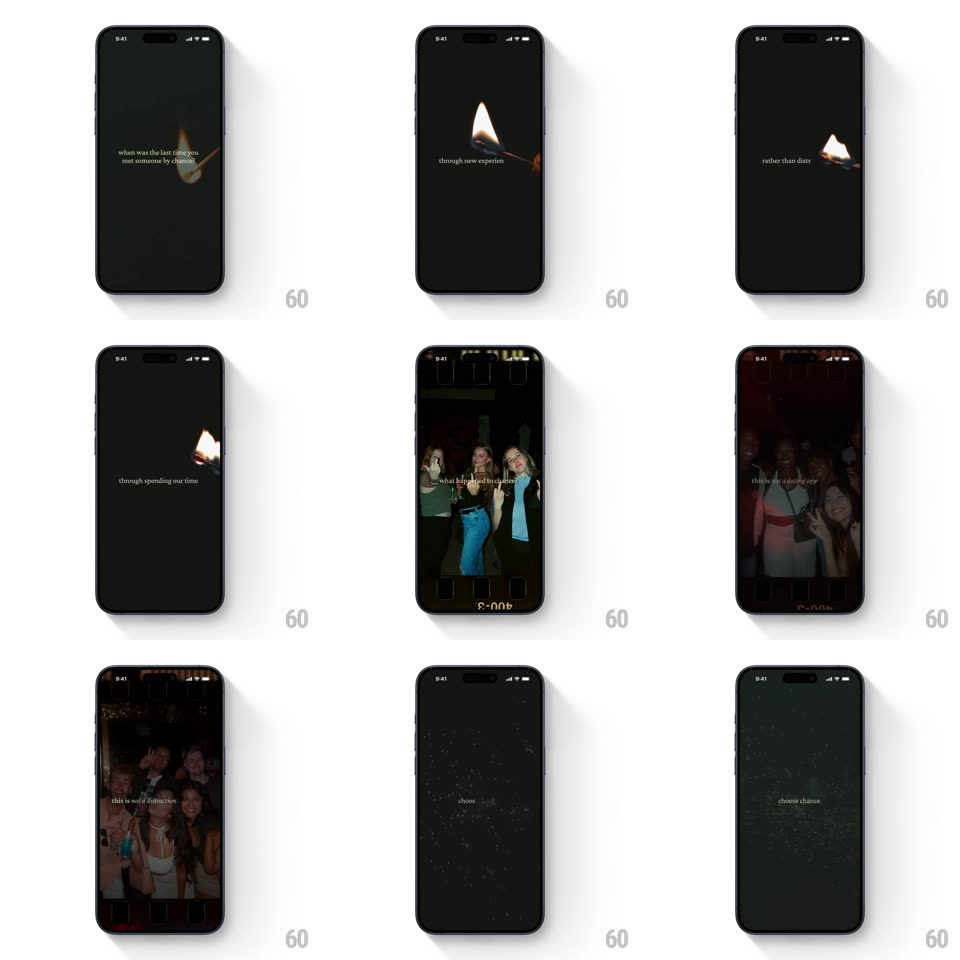

Media
Frame-by-frame

Rebuild this animation 1:1: 222's cinematic intro - typewriter questions over slow-motion night footage, film-frame borders flashing photos, ending on "choose chance".

Rebuild this animation 1:1: 222's cinematic intro - typewriter questions over slow-motion night footage, film-frame borders flashing photos, ending on "choose chance".
## Integration
Integration: stack-agnostic spec - springs given as stiffness/damping, timed motions as duration + curve; map every value to your framework and animation library of choice.
## Scene
A near-black cinematic sequence: small typewriter text ("when was the last time you met someone by chance?", "through new experiences...", "rather than distractions?", "welcome to", "this is not networking", "this is not random", "choose chance"), slow-motion video of people at candlelit dinners and gatherings, film-strip frame borders with edge markings ("400-3"), and a single match-flame glow in the dark.
## Motion spec
Pattern: typewriter text over slow-mo video with film-photo flashes.
- Text types on character by character (28ms per char, monospace-precise, cursor steady) - each line completes, holds ~1.2s, then fades (300ms) for the next.
- Video beneath runs at dream pace (0.5x feel): faces, glasses, laughter - always dark, always warm-lit; scenes crossfade slowly (600ms).
- Interstitial film frames flash in: a bordered photo slams on (1 frame hard cut), holds 400ms, cuts away - the film markings ("400-3") included; 2-3 flashes between text beats.
- The match flame: a single warm point of light flares up in the black (300ms), breathes (scale 1 -> 1.1, 2s), and lights the "welcome to" line.
- The final line "choose chance" types, then holds - no button, the sequence is the pitch.
## Calibration
- Everything is small and centered - big type would break the intimacy.
- The film flashes must feel mechanical - hard cuts only, no dissolves on the frames.
## Reduced motion
Text fades in whole (300ms); film frames crossfade; video keeps its slow pace.
## Don't miss
- The cadence is question, image, question - text never talks over the flashes.
- Warm light on black is the whole grade - no blue, no white scenes.